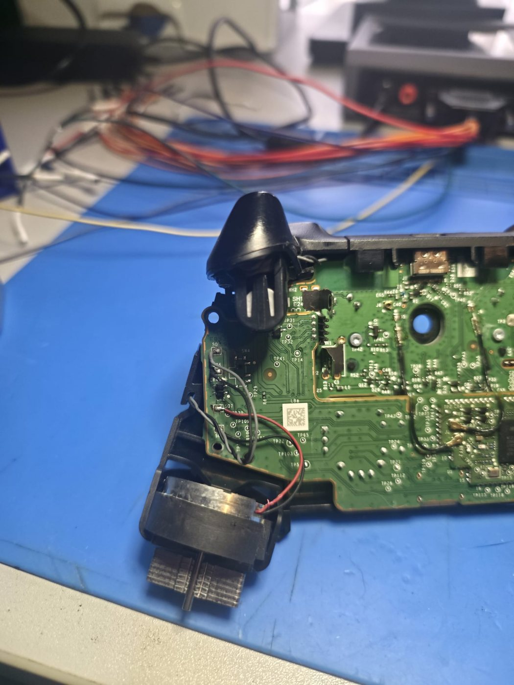

Stick drift is when your character or camera moves on its own, even though you're not touching the stick. It's one of the most common controller faults. Here's why it happens, what to try first, and how it's fixed properly.
Work through these in order. Each one takes a few minutes.
Connect the controller to the console and check for a controller update in the settings. Updates sometimes improve how the sticks are read.
On a Switch, go to System Settings, then Controllers and Sensors, then Calibrate Control Sticks, and follow the steps.
Push the stick fully to one side and gently clean around its base. Dust and grit can get in, though cleaning rarely fixes drift caused by wear.
Check whether the drift happens in every game, or only one. A game's own dead-zone setting can make a small amount of drift more or less noticeable.
If you've tried the steps above and it still drifts, the stick module itself is worn.

A controller on our bench with replacement stick modules fitted.
Controller repairs are quoted individually before any work. If we can't repair it, there's no charge for our time. If we post it back, return postage is added at cost. See all console and controller repairs and our terms.
Standard sticks have a wiper that rubs against a carbon track to read the stick's position. Over time the track wears, and the controller reads a position that isn't there.
Replacing the stick with another standard one fixes it until that one wears too. We can fit magnetic TMR stick modules instead, which sense position without anything rubbing, so they don't wear the same way.
PS5 DualSense, PS4 DualShock 4, Xbox controllers and Nintendo Switch Joy-Cons, among others.
Yes, from anywhere in the UK. A controller with a battery fitted must be handed in at a Post Office counter, not put in a postbox.
Post it to us from anywhere in the UK, or drop it off by appointment in Watford. Tell us what it's doing and we'll email you a free, no-obligation estimate.
Book a repair